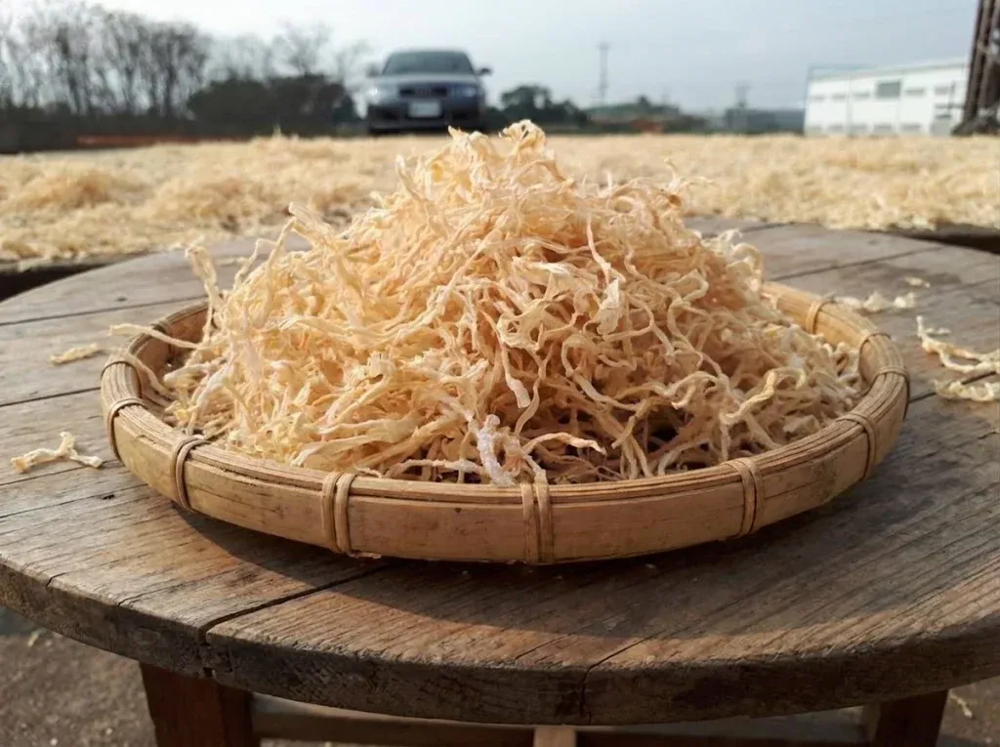
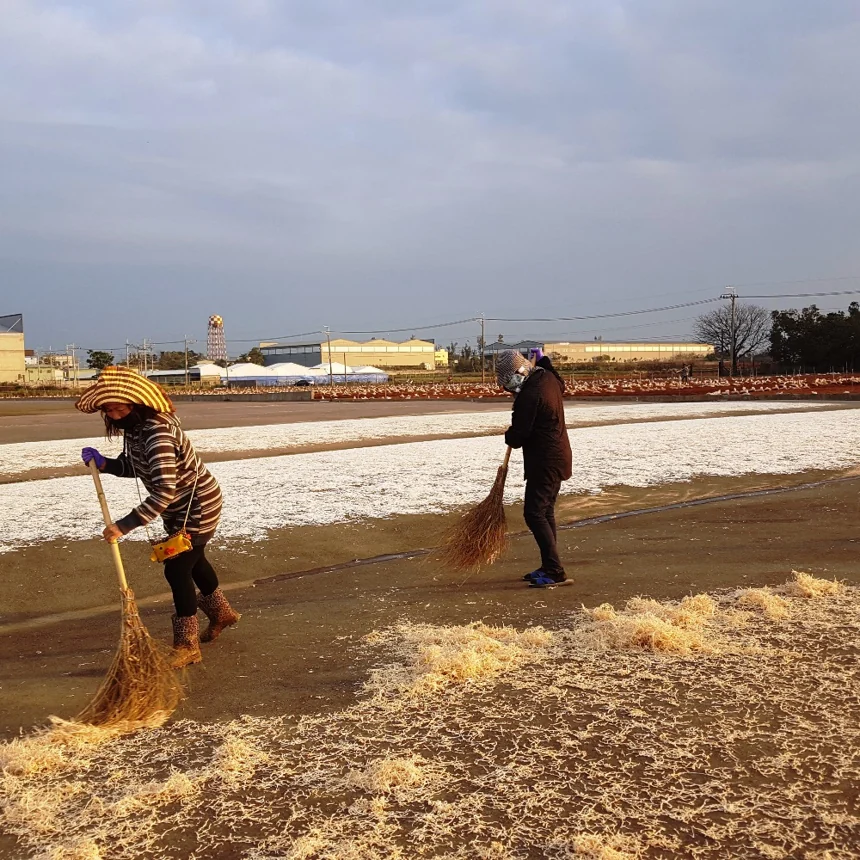

從田裡開始
蘿蔔的纖維，要經得起風
清水大肚山一帶的紅土排水好，秋冬蘿蔔長得慢，甜度和纖維都更紮實。
做菜脯米尤其挑蘿蔔的纖維。纖維太弱，刨成絲乾了以後，風一來就可能被吹散吹光；只有纖維夠韌，才能在風中留下濃縮甜韻。

無加鹽蘿蔔絲
一絲一絲的白蘿蔔，完全沒有加鹽。秋冬有合適的風，並有人在旁細心照看翻曬，就能留住蘿蔔最純粹的鮮甜。

從田裡開始
清水大肚山一帶的紅土排水好，秋冬蘿蔔長得慢，甜度和纖維都更紮實。
做菜脯米尤其挑蘿蔔的纖維。纖維太弱，刨成絲乾了以後，風一來就可能被吹散吹光；只有纖維夠韌，才能在風中留下濃縮甜韻。

步驟 01
形狀不整齊或大小不一的蘿蔔都能用，挑的是纖維夠紮實的秋冬蘿蔔。
無鹽菜脯米完全依賴蘿蔔本質的甜度與水質，每根蘿蔔的質地都是美味的關鍵底子。
步驟 02
以活水徹底沖洗外皮和表面的泥沙，再把蟲咬或不合適的部位一一修剔除。
因為製作過程不加鹽殺青搓洗，備料時的純淨清潔格外重要。

步驟 03
刨絲粗細是門大學問：太粗，鋪開不易曬透、容易悶壞；太細，乾了之後一陣大風就可能吹走。
經驗老到的農家能精準刨出均勻適中的絲條，才上曬場。
步驟 04
在洗淨的乾淨場地均勻攤平，視當日乾燥情形反覆翻上幾回。
如同新竹米粉一樣，清水的季風帶走濕氣是關鍵；日照太猛烈未必合適，關鍵在於風動與人工細心翻攪底層。

風味吃法
菜脯米還沒乾透時最怕濕氣。忽然來一場雨，或遇上風不夠乾的日子就可能發霉，因此收成全看老天與農家的全神貫注。
完全沒有加鹽，完整留住白蘿蔔本身的清甜甘美。乾的時候蓬鬆如鱈魚香絲，泡發後依然保有清爽脆感。拿來炒香做草仔粿、蘿蔔絲粿餡料，或熱炒下酒、入湯燉煮，都有獨樹一幟的鮮香風味！